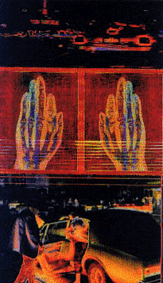

|
Since August 31, two shows Metamorphoses: Digital Photography in the Electronic Age and Pixel Perfect: Digital Photography in the Bay Area, have been hosted by the San Jose Museum of Modern Art. Over forty artists and over a hundred artworks are represented in these two shows,the separation of the two show defined by the location of the artists. The two shows are homogenous and held together, formally, if not conceptually,in most ways by shared world-view. All the artworks are hung on the museum walls, mostly moderately sized and neatly framed and glassed. If you've questioned whether or not something that was made on (or by as the those skeptical of technological art-making still say) a computer can't be art, perhaps here's proof: Metamorphoses and Pixel Perfect look and smell like art. If that was part of the intention, and I think it might have been, the shows are successful. But for the ones who reject such questions, whether art can or cannot be produced with certain kinds of techniques, the shows are postulated and stiff. Frequent is the use of glossy black frames of ebony (imitation), thick and broad mats, heavy Arches and Amati paper with water stamps, slick signatures and edition numbers.You often have to remind yourself that it's not a show of vintage photography or prints. All these signs are signifying art... art as commodity.
This framing frenzy is at its best, slick and elegant, at its worst, constipated. Sometimes, as in the collaborative works by Ed Hill and Suzanne Bloom under the name MANUAL, the framing reaches absurd proportions. Even though are supposed to be a conceptual part of their project about wood and Russian Constructivism (which they write, should be "understood in its vital sociopolitical form; i.e., free of modernism's suffocating embrace"(!?) Hey, is there another Russian Constructivism that I've missed?) it overshadows the images so only the frames are seen.
the frames
Digital Photography is a part of both names of the shows, but it's clear that the emphasis is on Photography and not on Digital. Often, as in thecase of Deanne Sokolin and Stephen Johnson, no other manipulation than cropping has been made after the digital photograph was taken. The fact that thetechnique is digital seems like a technicality. If the digital never shows up as trace why is it important to the viewer? Almost all professional music is nowadays recorded digitally and video is going in that directiontoo. Should they be treated different than their analogue correspondents?
But the shows contain a lot of computer manipulated photography. Many are the copies of the software product Photoshop that have been sold to the participating artists by the main sponsor of the two shows: Adobe. Many of the participants use this product, and products similar to that one, to do collage, change color, layer images and/or text. Kathleen H Ruiz, Eva Sutton and Shelley J. Smith practice this "traditional" use of computer and software with often dreamlike, romantic results with roots in surrealism. In some instances, the works are of old "family photographs" scanned and (re-)used. Both Susan Schwartzenberg and Martina Lopez do this but the latter is more successful in that she is aware of the role that scale plays, especially when situated in a large room like this.
"I believe that through alteration [...] these images can actually convey truth and emotion in a more direct fashion [than the originals]." These are the words by Anil Melnick who appropriates classic photographers works and manipulates them. The concept of truth in photography has been so fundamentally, and successfully, invalidated by semioticians and philosophers it feels awkward to see it mentioned in a large show like this one in relation to photography-- be it computer manipulated or not. Kathleen H. Ruiz, Eva Sutton, Shelley J. Smith and Anil Melnick are all too sentimental and "touchy, feely" for my taste.

Some of the artists in these two shows take the concept, or the specificities of working with computers and bring it to a level I would have liked to
have seen more. Nancy Burson investigates the software along with the art production and creates fictitious portraits of children with potential birth disease. This is a zone between virtual and factual where the fears of our
minds are born. Single, Twins and Triplets are the titles of Keith Cottingham's three contributions, all from the series Fictitious
Portraits. These images looks at a first glance to be studio portraits of what the titles indicate. But something is not just right. These eerie dandy-like Boys from Brazil have never walked or talked. They arefictitious. The notion creeps up to you from behind -- that everything can be so right... and still so wrong. The explanation of the creation of these clones confirms that feeling. The artist's intention and technique is not important as a help or a clue, but inherent in the piece of art.
Osamu James Nakagawa, Esther Parada, Roshini Kempadoo, Paul Klein and Robin Lasser represent the obvious political point of view. Roshini Kempadoo's monetary bills is an interesting idea but the seventies-type message is just too much -- "we all agree." Osamu James Nakagawa also uses the same "fightthe power" strategy. The images are in some way effective but do not really raise any questions that we don't already know. I also wonder why he uses a computer. What he is doing could be achieved in a dark room witha pair of scissors. (Donate the computer equipment to ANC!) Robin Lasser in Pixel Perfect has a humorous and more micropolitical take on issues.The images are successfully slightly clumsy both in terms of composition and technique, and let us see our public signs in a new light.
 The only artist represented in both shows is Diane Fenster who has become quite known for her text/image collages. Her images are so overloaded with indexical and iconographic signs I feel pushed out when I try to access them.
The curator of the "companion exhibition" to Metamorphosis,
Pixel Perfect is the young SJMA Assistant Curator Mark Petr who has done a good job under time pressure even though I would have liked to see a show that could tap into a meatier discourse of contemporary issues. Rebeca Bollinger's gloomy, suburban, networked images with an aestethic refinement and conceptual point would have been in such a show. Keay Edwards III's formulaic approach, where "artistic" colors and Greek mythology are put into a triptych, would not.
Metamorphoses: Digital Photography in the Electronic Age and Pixel
Perfect: Digital Photography in the Bay Area work well together. Incorporating a little of everything seems to make them approachable for everyone -- maybe more for the eyes than for the brain. If you feel contemporary art is often difficult and arcane, you might want to take a look at these exhibitions.
|